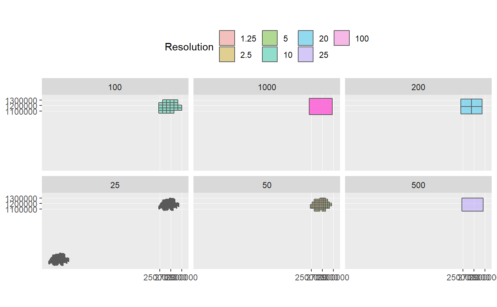
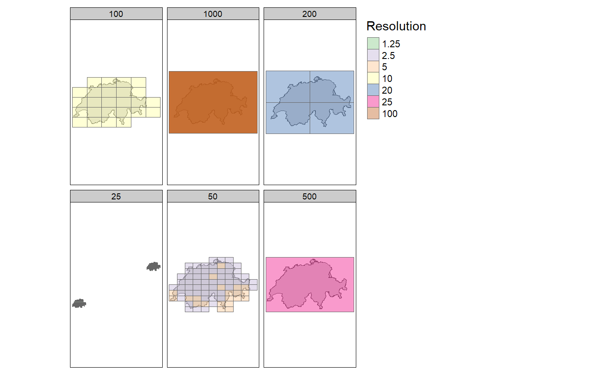

What’s the idea behind swissmapraster 4 R?
This Package is meant as a Bridge between Swissmapraster Data (SMR) and R. It is the hope of the package developer(s) that this Package will prove to be necessary for a short time period, just so long till SwissMapRaster Data is freely and openly available to the public, along with an appropriate R-interface. Unfortunately, since the SMR Data is still behind a paywall, this package does not provide access to this data. It simply provides an interface for cases where the data is already available to the user.
Does this package provide access to map data?
NO! This package does not give access to any raster maps, by swisstopo or otherwise. Access to this data has to be acquire elsewhere: Either through swisstopo directly or via third parties such as geodata4edu. In fact, in the current version of the package the data has to be stored locally on your own hard drive (urgh!). Our hope is however, that this will change soon so that the data can be hosted on a network folder or on a GIS Server.
How is the package used?
Aquire raster data
First of all, the raster maps need to be acquired and stored in a folder. The package is developed with a focus on SwissMapRaster, but probably other raster maps will work as well. Currently only CRS 2056 is implemented. We might also include CRS 21781 at some point but that’s probably it.
The raster maps should be sorted in a folder per scale. Currently, the names of the folders must be as follows: “SMR25” for 1:25’000 maps, “SMR50” for 1:50’000 maps and so on. Rasters should not overlap or have gaps.
Scan Folder
Next, run the command init_fdir() pointing to the location (parent folder) of this maps. This command creates a “File Directory” in the package environment by scanning all folders recursively and analyzing the content. All files ending with “tif” are checked for extent, number of layers and resolution. All the mentioned attributes of each raster file, along with the file path and the extent as a geometry, are stoerd in the variable fdir of the package environment.
Show available raster extents
In order to view the available extents, call the function show_extents(). The default method is ggplot2.

Use method = "tmap" to show the extents in combination with other spatial data. For example, the boundary of switzerland is included in the package. Load this dataset with data("landesgebiet")

data("gemeinden_top_centroid")
tm_shape(landesgebiet) + tm_polygons() + tm_shape(gemeinden_top_centroid) + tm_dots(size = "EINWOHNERZ")## Warning in .f(file = .l[[c(1L, 1L)]], res1 = .l[[c(2L, 1L)]], res2
## = .l[[c(3L, : Rasters in Extent do not have matching resolutions. Using
## disaggregate in order to enable merging
License
- GPL-2 (arbitrarily chosen)
Developers
- Nils Ratnaweera
Maintainer